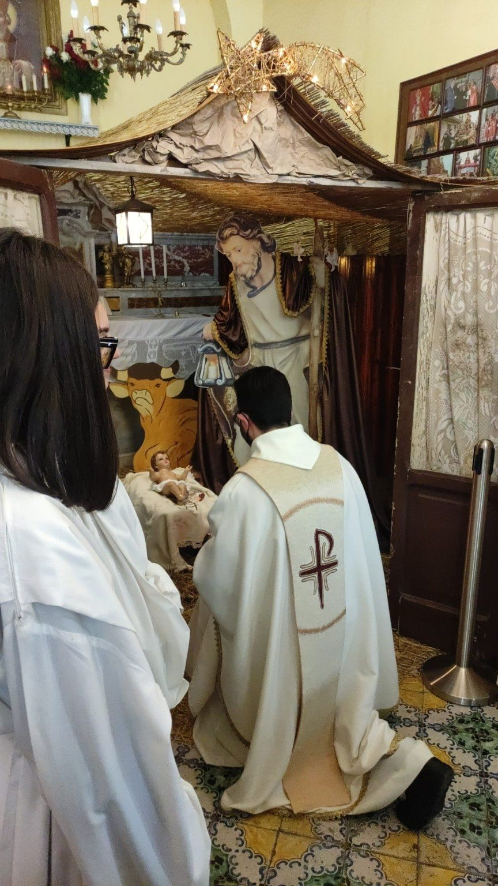

← Attività
Adventus et Nativitas · Via Casalanno 1
Natale in Associazione.
Natale in Associazione.
Tradizione, preghiera e comunità.
Nel periodo natalizio la sede si prepara alla Natività con l’allestimento del presepe e momenti di preghiera e benedizione. Le immagini raccontano un Natale vissuto come occasione di incontro, raccoglimento e partecipazione.
Presepeallestito nella sede
Preghieramomenti comunitari
Tradizionevissuta e condivisa

Memoria fotograficaImmagini che documentano
Immagini che documentano
un momento vissuto.
Le fotografie appartengono all’archivio dell’Associazione San Castrese e documentano attività e momenti vissuti dalla comunità.